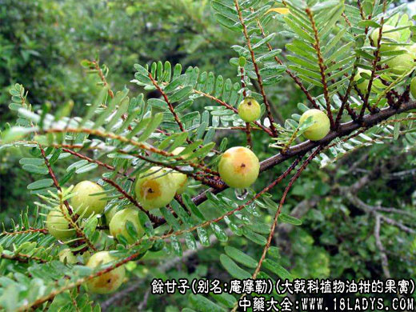
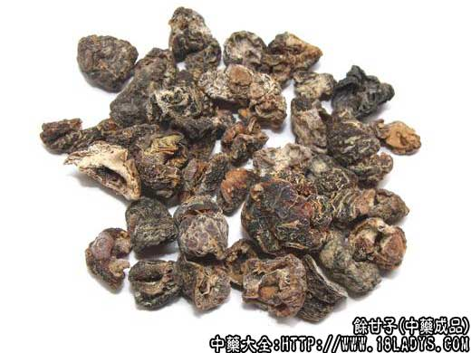
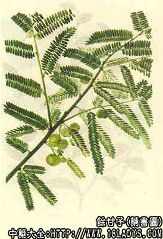

别名：庵摩勒、余甘、庵摩落迦果、望果、油甘子、牛甘子、橄榄子、喉甘子等。
来源：为大戟科植物油柑的果实。
产地：福建、广东、广西、云南、贵州、四川、台湾等地。
性状与鉴别：余甘子干燥果实呈圆形或不规则圆形，微显六瓣状，径约2厘米，表面棕褐色，粗糙不平，有细小的疣状突起，基部遗有圆点状的果柄痕迹。质坚实，不易破碎，破碎后内显黄白色，种子不大。气微，味甜带涩。以干燥、饱满、无果柄及叶片掺杂者为佳。
性味：苦，甘，寒。
归经：入脾、胃二经。
功效与作用：止咳化痰，解毒乌发。
临床运用：
1、止咳化痰：余甘子用于感冒咳嗽、咽痛、哮喘等。如鲜余甘子10～30个，水煎服，可治感冒咳嗽咽痛；用本品20个与猪心肺同煮熟连汤吃，可治哮喘。
2、解毒乌发：本品生吃吞汁，可解河豚鱼中毒；用本品取子压汁和油涂头，能治头发早白。
古代文献中记载，久服本品可轻身延年。经现代研究证明，本品含有大量的维生素c，并具有广谱抗菌作用，其同属植物的叶有降血糖作用。老年人常服本品，可防治维生素c缺乏症及各种急慢性感染，却病延年。
用量用法：每服10～30克，入汤、散剂，并可捣汁外徐。
参考资料：
1、古代文献
(1)《本草拾遗》：余甘子“补益强气。合铁粉一斤用，变白不老。取子压汁，和油涂头，生发去风痒，令发生如漆黑也。”
(2)《海药本草》：余甘子“主丹石伤肺，上气咳嗽。久服，轻身延年长生。”
2、现代研究
(1)余甘子果实含大量维生素C，且含量稳定。尚含鞭质，其中有葡萄搪没食子鞣甙、没食子酸、并没食子酸、鞣料云实精、原诃子酸、诃黎勒酸、诃子酸、3,6一二没食子酰葡萄糖。
(2)余甘子干燥果实经提取获得的抗菌活性物质，对葡萄球菌、伤寒杆菌、副伤寒杆菌、大肠杆菌及痢疾杆菌均有抑制作用，对真菌无作用。果实的提取物予兔口服，可增加其体重及血中总蛋白含量而不改变各蛋白之间的比例，说明它有同化作用。